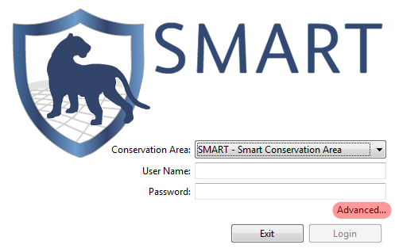
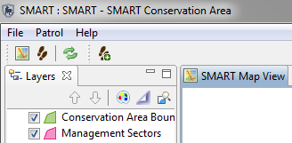
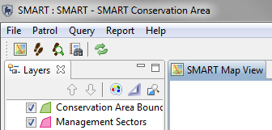
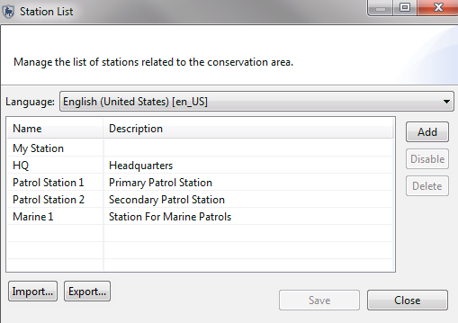
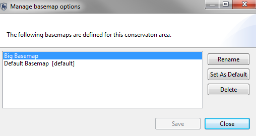

Após a instalação inicial do software SMART, você precisará configurar uma nova Área de Conservação, tarefa que envolve vários componentes de configuração.
A criação de uma nova Área de Conservação é feita através do link Avançado ... na tela inicial.
Tela Inicial

Opções avançadas SMART
Uma Área de Conservação existente pode ser usada como modelo para criar novas Áreas de Conservação. Um modelo inclui o modelo de dados, propriedades da CA, bases, agências e classificações, mandados de patrulha, tipos de transporte, equipes, consultas e relatórios. Usando um modelo existente, o administrador pode economizar tempo e garantir a consistência entre as Áreas de Conservação.
Selecione a opção de Criar Área de Conservação usando a Área de Conservação existente como Modelo e, em seguida, selecione a Área de Conservação apropriada na lista suspensa.
Se a opção de Criar Área de Conservação em Branco for selecionada, o assistente continuará com as etapas restantes na configuração de uma Área de Conservação.

As Propriedades da Área de Conservação são nomes e descritores atribuídos a uma Área de Conservação específica. Essas propriedades podem ajudar os usuários do software SMART a gerenciar várias áreas de conservação.

A criação de uma conta para o administrador principal de uma Área de Conservação recém-criada é necessária; os campos precisarão ser preenchidos antes que o software avance. Depois de preencher o formulário, a conta do administrador principal será criada e poderá ser usada para fazer alterações na Área de Conservação recém-definida.
Usuário Administrativo

ID: O identificador existente do funcionário da Área de Conservação. Se não houver identificador, o sistema irá gerar um se deixado vazio.
Nome(s): O nome do funcionário
Sobrenome(s): O sobrenome do funcionário
Início da Área de Conservação: A data de início do emprego do funcionário
Data de Nascimento: A data de nascimento do funcionário
Gênero: O gênero do funcionário
Nome de Usuário Smart: O login ou o nome de usuário usado para acessar o software SMART
Senha SMART: A senha do nome de usuário
Digite Senha novamente: Uma confirmação da senha da conta
Após a inicialização de uma nova Área de Conservação, o administrador principal precisará definir o modelo de dados a ser usado para a nova Área de Conservação.

Esse processo pode ser realizado por:
Depois que um modelo de dados é estabelecido, é possível personalizar o modelo de dados para atender às necessidades de uma determinada Área de Conservação.
Os funcionários que trabalham em uma Área de Conservação e os usuários da SMART podem pertencer a uma agência específica e podem ter uma classificação dentro dessa agência. As classificações são associadas às agências e devem ser criadas como uma entrada em uma agência específica.
Como parte da configuração inicial de uma Área de Conservação, a lista de Agências e suas classificações associadas é acessada através do menu “Área de Conservação - Agência e Lista de Classificação”. … "

Adicionar Agência: Adiciona novas agências
Excluir Agência: Exclui agências selecionada
Adicionar Classificação: Cria novas classificações como parte da agência selecionada
Excluir Classificação: Exclui classificação selecionada
Importar: Importa um arquivo XML contendo a lista de agências e fileiras
Exportar: Exporta um arquivo XML contendo a lista de agências e fileiras
A Lista de Funcionários contém a conta de administrador única que foi criada durante a inicialização de uma novaa Área de Conservação. Funcionários adicionais de uma Área de Conservação podem ser inseridos individualmente ou por meio de um processo de upload em massa.

Digite os termos de pesquisa: filtro de texto para entradas de lista curta
Importar: Abre uma interface para importar um CSV para permitir o carregamento em massa de funcionários.

Exemplo de CSV (employees.csv)
Editar Abre uma interface para atualizar as informações sobre o funcionário selecionado

ID: O identificador existente do funcionário da Área de Conservação. Se não houver identificador e for deixado vazio, o sistema irá gerar um.
Nome(s): O nome do funcionário
Sobrenome(s): O sobrenome do funcionário
Início da Área de Conservação: A data de início do emprego do funcionário
Inativo: Se alternado, indica que o funcionário não é mais empregado pela Área de Conservação.
Final do Emprego: Se a caixa Inativo estiver marcada, a data de término do emprego se tornará editável e permitirá o registro de uma data final de emprego.
Data de Nascimento: A data de nascimento do funcionário
Gênero: O gênero do funcionário
Agência: Agência do funcionário
Classificação: Classificação do funcionário
Nome de Usuário Smart: O login ou o nome de usuário usado para acessar o software SMART
Senha SMART: A senha do nome de usuário
Digite Senha novamente: Uma confirmação da senha da conta
Nível de Usuário SMART: O nível de usuário SMART é atualizado usando esse menu pull down.
Criar Novo: Abre uma interface para atualizar as informações sobre o funcionário selecionado

ID: O identificador existente do funcionário da Área de Conservação. Se não houver identificador e for deixado vazio, o sistema irá gerar um.
Nome(s): O nome do funcionário
Sobrenome(s): O sobrenome do funcionário
Início da Área de Conservação: A data de início do emprego do funcionário
Data de Nascimento: A data de nascimento do funcionário
Gênero: O gênero do funcionário
Agência: Agência do funcionário
Classificação: Classificação do funcionário
Nome de Usuário Smart: O login ou o nome de usuário usado para acessar o software SMART
Senha SMART: A senha do nome de usuário
Digite Senha novamente: Uma confirmação da senha da conta
Permissões e Restrições de Níveis de Usuário
As contas SMART têm permissões de acesso variáveis, permitindo que os administradores atribuam um nível de usuário adequado aos funcionários. O design SMART é dinâmico e as contas de usuário podem ser atualizadas para acomodar as alterações nas tarefas do funcionário.
Entrada de Dados
O nível de usuário de entrada de dados tem mais restrições no lugar. A barra de menus e os ícones disponíveis foram personalizados para incluir apenas os recursos necessários para a conta inserir dados de patrulha.
O nível do usuário de entrada de dados pode criar, exportar e importar dados de patrulha. Também pode criar backups do sistema após a conclusão das informações de patrulha.

Analista
O nível de usuário do analista é projetado para que os funcionários criem, exportem, importem e executem consultas e relatórios. O nível de usuário do analista não pode criar, alterar ou excluir quaisquer consultas ou relatórios que tenham sido salvos nas Consultas da Área de Conservação ou nos Relatórios da Área de Conservação. O nível de usuário do analista pode executar, criar, alterar ou excluir relatórios salvos nas pastas Minhas Consultas ou Meus Relatórios. Uma conta de analista não pode inserir dados de patrulha ou importar/exportar patrulhas.

Gerente
A conta de gerente pode fazer alterações completas nos módulos de patrulha, consulta, relatório ou planejamento. Uma conta de gente não pode fazer alterações no modelo de dados nem atualizar a Área de Conservação, nem os parâmetros de patrulha.
Administrador
A conta do administrador tem acesso total a todas as funções e opções do SMART.
Após a inicialização de uma nova Área de Conservação, é necessária uma lista de bases.
Nome: O nome da base
Descrição: Uma descrição detalhada da base
Nota: O idioma é definido antes de entrar no nome e descrição da base.

Adicionar: Adiciona uma nova Base
Desativar: Desativa uma base de uso futuro
Excluir: Exclui completamente a base da Área de Conservação
Importar: Importa um XML de Bases
Exportar: Exportar um XML de Bases
A SMART suporta várias projeções do sistema de coordenadas e o Administrador pode selecionar e definir projeções padrão. Este processo não é um requisito durante a inicialização das informações de patrulha para a Área de Conservação.

Adicionar: Adiciona projeções à Área de Conservação
Excluir: Exclui projeções da Área de Conservação
Editar: Permite edições de parâmetros personalizadas à projeção selecionada
Configurar Padrão: Configura a projeção selecionada como padrão para a Área de Conservação
Como parte do processo de inicialização, a nova Área de Conservação exigirá que os arquivos de limite sejam carregados. Nem toda Área de Conservação terá arquivos de limite para todos os 5 tipos e nem todos os 5 são necessários.
Shapefiles ESRI são o formato padrão para carregar no SMART.

Carregar: Abre uma janela onde o Administrador selecionará o Shapefile ESRI.
Limpar: Limpa ou exclui o Shapefile escolhido da Área de Conservação.
Alterar Rótulos : Permite que o Administrador selecione um campo diferente que será usado para exibição e rotulagem.
Nota: Um arquivo de projeção (.prj) é exigido pela SMART e, se não estiver presente durante o carregamento do Shapefile, o aplicativo rejeitará o Shapefile.
Os mapas de base são essencialmente parâmetros de exibição cartográfica salvos. Eles são criados na janela Mapeando Perspectiva. O Administrador pode definir um mapa de base padrão para a Área de Conservação ou excluir mapas base desta janela. Este processo não é um requisito durante a inicialização das informações de patrulha para a Área de Conservação.

Renomear: Caixa de diálogo para renomear ou fornecer traduções para os nomes do mapa de base
Definir como Padrão: Configura o mapa de base selecionada como padrão para a Área de Conservação
Excluir: Exclui o mapa de base selecionado
Para alterar seu nome de usuário e/ou senha no menu principal selecione "Alterar Senha ..."
Para alterar seu nome de usuário, clique no botão "Alterar ...", digite um novo nome de usuário e clique no botão "OK". Depois de clicar no botão "OK", o nome de usuário estará atualizado.
Para alterar sua senha, digite sua senha atual ao lado de "Senha Atual:" e digite uma nova senha ao lado de "Nova Senha:". Você também deve confirmar a nova senha digitando-a novamente ao lado de "Redigitar Nova Senha:". Em seguida, clique no botão "Salvar" para implementar a nova senha. Se você decidir que não deseja salvar a nova senha, poderá clicar no botão "Fechar".
Para alterar a senha de outra conta: Uma conta de administrador é necessária para redefinir a senha de outra conta. O administrador precisará entrar no menu Área de Conservação e selecionar "Lista de Empregados". O próximo passo é selecionar o empregado e clicar em "Editar" na parte inferior da janela. Isso abrirá a janela Atualizar Funcionário e o administrador poderá redefinir a senha dessa janela.
A capacidade da SMART de exportar e importar patrulhas permite a entrada de dados distribuídos e o recarregamento em um sistema mestre, além de funcionar como um arquivo de backup no caso de perda de dados. Os arquivos de patrulha exportados da SMART estarão no formato XML.
Para exportar uma ou mais patrulhas, no menu principal de patrulha selecione "Exportar Patrulhas...". Escolha uma pasta de destino usando o botão "Procurar". Este será o local do(s) arquivo(s) exportado(s).
Selecione a caixa de seleção "Incluir Anexos" se desejar incluir anexos de arquivo, como arquivos de imagem.
Escolha as patrulhas que você deseja exportar da lista. Você pode selecionar patrulhas individualmente ou selecionar todas de uma vez.
Quando você tiver selecionado uma Pasta de Destino, indique se deseja incluir Anexos de Arquivo e selecione as patrulhas que deseja exportar. Em seguida, clique no botão na parte inferior com o rótulo "Exportar" para criar o(s) arquivo(s) de dados de patrulha. Observe que um arquivo será criado para cada patrulha exportada.
O programa informará o número de patrulhas que foram exportadas com sucesso. Clique em "OK" para fazer isso. Assim, você criou um arquivo ou arquivos que contêm dados de patrulha. Os arquivos podem ser compartilhados com outros e carregados em outras instalações da SMART.
Para importar um arquivo de patrulha SMART, selecione "Importar Patrulhas ...” no menu principal de Patrulhas. Escolha se você deseja importar uma única patrulha ("Importar Patrulha Única") ou várias patrulhas ("Importar Patrulhas Múltiplas").
Se for uma patrulha única, use o botão "Procurar ..." para navegar até a pasta que contém a patrulha e selecione a patrulha que você deseja importar. Clique no botão "Abrir". Em seguida, clique no botão "Importar".
Para importar várias patrulhas, use o botão "Adicionar Arquivos ..." para adicionar sucessivamente os arquivos de patrulha à lista para importação. Em seguida, clique no botão "Importar" quando tiver adicionado todas as patrulhas desejadas à lista.
Para auxiliar na distribuição de um modelo de dados bem projetado ou para proteger contra perda de dados, a SMART pode exportar o modelo de dados em um formato XML estruturado. Este arquivo XML pode ser usado para construir uma nova Área de Conservação ou para reconstruir uma Área de Conservação corrompida.
Para exportar um modelo de dados SMART para o formato XML, selecione "Modelo de Dados ...” no menu principal Área de Conservação. Na parte inferior da janela, clique no botão "Exportar para XML ...". Navegue até o local da pasta onde você deseja salvar o modelo de dados XML. Em seguida, digite um nome de arquivo para o nome do arquivo que você está salvando. Clique no botão "Salvar" para criar o arquivo de modelo de dados XML. Aguarde até que o software lhe diga que o modelo de dados foi exportado com sucesso e, em seguida, clique no botão "OK".
A exportação de uma Área de Conservação exportará todos os componentes de uma determinada Área de Conservação. Esta função não só permite o arquivamento de uma Área de Conservação, como também a distribuição e compartilhamento.
Para exportar uma Área de Conservação, no menu principal, selecione "Exportar Área de Conservação ...".
Use o botão "Navegar ..." para ir até um local onde você deseja armazenar o arquivo. É recomendável que você não altere o nome do arquivo. Quando você encontrar o local em que deseja armazenar o arquivo, clique no botão "Salvar". Em seguida, clique no botão "Exportar" para criar o arquivo que contém a Área de Conservação exportada. O software informará ao terminar de exportar a Área de Conservação com sucesso. Clique em "OK" quando receber esta mensagem.
Na tela inicial de inicialização da SMART, você pode importar uma área de conservação de um arquivo salvo. Para fazer isso, clique no botão "Opções Avançadas" e selecione "Importar uma Área de Conservação" e clique no botão "Continuar".
Você pode ser solicitado a fazer o backup da base de dados atual antes de importar sua área de conservação, caso já exista uma área de conservação com o mesmo nome no banco de dados. É aconselhável clicar no botão "Sim" para criar um arquivo de backup. Nesse caso, você especificará um local e um nome de arquivo e, em seguida, clicar no botão "Backup". Mas você também pode escolher "Não".
Agora você usará o botão "Navegar" para localizar o arquivo da área de conservação que você deseja importar. Depois de ter encontrado o arquivo, clique no botão "Abrir" e, em seguida, clique no botão "Importar". O software informará que concluiu a importação da área de conservação; Clique no botão "OK" para prosseguir.
Agora que você importou com sucesso a área de conservação, você precisará entrar na área de conservação a partir da tela inicial, usando um nome de usuário e senha apropriados. Se a área de conservação que você importou pertencer a você, você saberá o nome de usuário/senha. Se alguém enviou a área de conservação para você, então você terá que perguntar a essa pessoa o nome de usuário/senha a ser usada.
Ocasionalmente, pode ser necessário excluir uma Área de Conservação.
Três razões de exemplo para fazer isso são:
Espera-se que, se uma área de conservação se corromper ou se tornar inutilizável devido a um problema de dados, você estará restaurando um backup da Área de Conservação após excluir a versão incorreta.
Por favor, certifique-se de entender as conseqüências da exclusão de uma área de conservação. Em caso de dúvida, é recomendável que você não continue.
Para excluir uma Área de Conservação, no menu principal, selecione "Excluir Área de Conservação ...". Leia o aviso e clique no botão "OK" se você deseja prosseguir. Em seguida, digite seu nome de usuário e senha para confirmar a ação. Clique no botão "Excluir" para excluir a Área de Conservação atual.
Depois que a exclusão for concluída, o software SMART abrirá uma tela inicial inicial. Se não houver outras áreas de conservação, o software apresentará algumas opções para prosseguir.
Observe que você só pode excluir a área de conservação em que você está conectado atualmente.
A função Sistema de Backup criará um arquivo de backup de todo a base de dados e, portanto, fornecerá um backup de cada Área de Conservação gerenciada pela base de dados. Se você deseja fazer o backup de uma única área de conservação, é melhor usar a função "Exportar Área de Conservação ..." do menu Arquivo principal.
Para criar um backup de todo o banco de dados SMART, no menu principal, selecione "Sistema de Backup".
Use o botão "Navegar ..." para ir até um local onde você deseja armazenar Backup o arquivo. É recomendável que você não altere o nome do arquivo. Quando você encontrar o local em que deseja armazenar o arquivo, clique no botão "Salvar". Em seguida, clique no botão "Backup" para criar o Backup arquivo que contém a base de dados SMART. O software informará ao terminar de exportar a Área de Conservação com sucesso. Clique em "OK" quando receber esta mensagem.
Lembrar-se de realizar backups regulares é fundamental para garantir que os dados possam ser recuperados em caso de falha do sistema. A SMART tem a capacidade de executar automaticamente backups regulares para uma pasta especificada. O backup incluirá todo o banco de dados SMART.
Para configurar um backup automático, selecione Preferências do Sistema no menu principal do arquivo; em seguida, vá ao link à direita de "Backups Automáticos".
Existem três parâmetros que você pode definir na página Configuração de backup automático.
Em primeiro lugar, você define a frequência do backup automático. Um valor de "1" significa que um arquivo de backup será criado todos os dias. Um valor de "7" significa que um arquivo de backup será criado todos os 7 dias. Um valor de "0" significa que um arquivo de backup será criado todos os dias. Um valor de "-1" informa ao sistema para não executar backups automáticos.
Em segundo, você diz ao sistema quanto tempo deve armazenar arquivos de backup automáticos. Esses arquivos são grandes e, com freqüência, a criação de arquivos de backup consome considerável espaço em disco. Um valor aqui de "10" significa que o SMART excluirá arquivos de backup com mais de 10 dias. Para criar um arquivo de longo prazo, você deve copiar periodicamente um arquivo de backup SMART para um local separado.
Em terceiro lugar, você deve especificar o local onde deseja armazenar os arquivos de backup automático (até que o sistema os exclua com base na sua idade). Use o botão "Navegar ..." para ir até um local onde você deseja armazenar Backup o arquivo. Os nomes de arquivos serão criados automaticamente, mas você pode escolher um local de pasta.
Depois de definir esses três parâmetros, clique no botão "Salvar" para implementar essas configurações de backup automático. Observe que um backup não será executado neste exato momento; backups automáticos são executados, se agendados, quando você fecha o software.
O software SMART tem um projeto extensível que permite que um repositório de plug-ins adicionais seja instalado por um administrador. O sistema de plug-in SMART usa um instalador interno que acessa um site remoto ou um arquivo local contendo os plug-ins adicionais.
O acesso ao instalador de plug-ins é encontrado no menu Arquivo.


O Instalador de Plug-In permite que o Administrador selecione quais plug-ins (ou componentes deles) serão adicionados à Área de Conservação em funcionamento.
Nota: Os pacotes de idiomas disponíveis são instalados usando a interface Plug-In.
Após a seleção dos plug-ins solicitados, o instalador realizará verificações de validação para garantir que um plug-in ainda não esteja presente e crie um assistente simples para o processo de instalação.
Notas sobre os Backups do Sistema e Exportação/importação de Conservação
Os Backups e Restaurações do Sistema exigem que a instalação SMART tenha a mesma configuração do arquivo de restauração do sistema. Se o arquivo de restauração do sistema tiver uma configuração diferente da instalação SMART, o processo de restauração falhará. Se ocorrer uma falha, o Administrador precisará atualizar a instalação SMART para corresponder ao arquivo de restauração antes que uma restauração bem-sucedida seja possível.
O processo de importação da Área de Conservação é tratado de forma diferente e, se o arquivo de importação tiver dados de plug-ins adicionais que a instalação SMART ativa não faz, essas informações não serão importadas. A importação não falhará, mas, ao mesmo tempo, a informação não é importada. Se os dados de adição forem necessários, recomenda-se excluir a Área de Conservação recém-importada, instalar os plug-ins apropriados e, em seguida, reimportar.
Desinstalando Plug-Ins
Se um plug-in opcional precisar ser desinstalado, o Administrador precisará entrar na tela Ajuda - Sobre a SMART e selecionar a opção Detalhes da Instalação. Isso exibirá a tela Detalhes de Instalação da SMART, que contém informações técnicas sobre a instalação SMART. A guia Plug-ins Instalados é onde os plug-ins opcionais podem ser desinstalados.